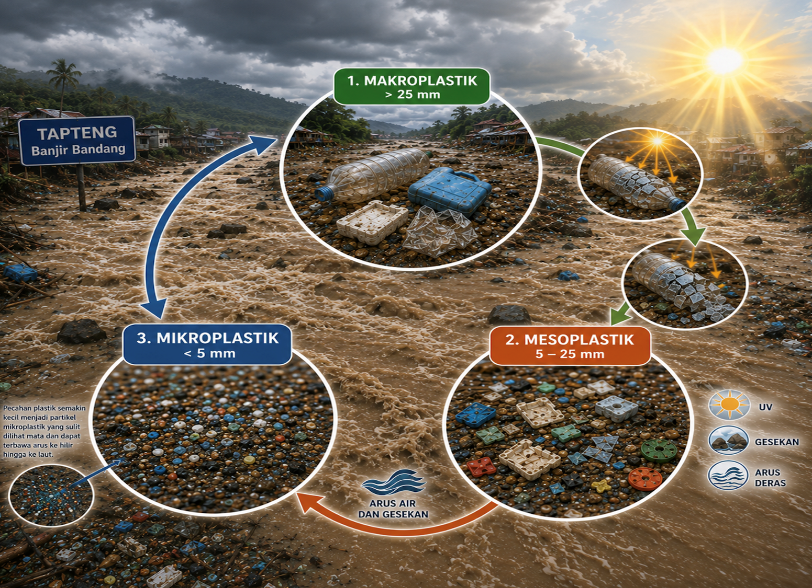
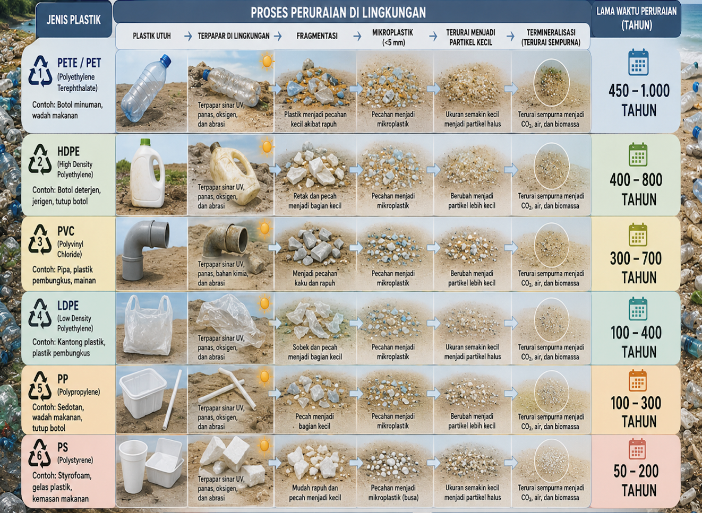

Bagaimana Siklus Perubahan Mikroplastik di Alam?
Sampah plastik yang masuk ke sungai tidak langsung terurai, tetapi akan mengalami proses pemecahan secara bertahap. Plastik berukuran besar (makroplastik) akan pecah menjadi potongan yang lebih kecil (mesoplastik) akibat paparan sinar matahari (UV), gesekan dengan batu dan sedimen, serta derasnya arus air, terutama saat banjir.
Seiring waktu, plastik tersebut terus terfragmentasi hingga menjadi mikroplastik berukuran kurang dari 5 mm yang mudah terbawa aliran sungai, menyebar dari hulu hingga muara, dan sulit dihilangkan dari lingkungan.

Proses Peruraian dan Lama Waktu Degradasi Menurut Jenis Plastik
